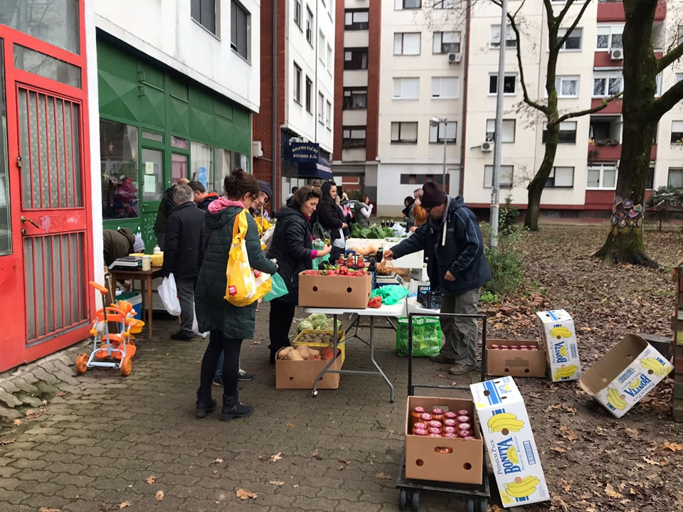
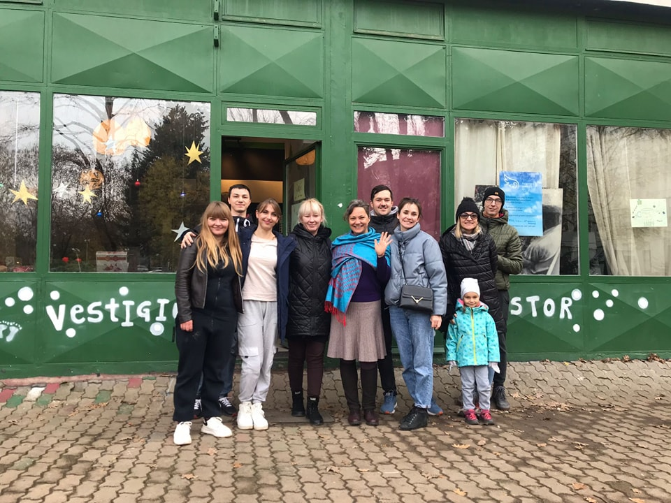

Vestigium Association (lat. footprint) is an ecological-creative association for improving the quality of our community by approaching and promoting a healthy and sustainable way for our future. The idea of founding the association arose in 2011 by six women listening to the needs of their neighbours in creating a multifunctional space where initiatives could take place and develop. The space given by Vestigium should improve the quality of living together as a community and to solve problems such as the growing distance among people, the lack of places to gather and to socialize, the lack of content for children and adults in their lives and the exclusion of families and their children as well older residents.
The Vrbana area is a typical young district of Zagreb with many residents being families. Services such as a market, a library, a health center and a community center have long been missing. Vestigium provides some of these by holding a farmers market, creating a free library, having poetry evenings, arranging storytelling sessions for the youngest and by organizing lectures and workshops on living a healthy lifestyle, cooking, sewing, relaxing as well as on educational, ecological and eco-creative content. The subject is based on the active input of volunteers and members who want to help shape and support the community to increase the quality of life for their fellow members, their children and themselves.
Every year the association conducts over 1000 activities to educate children and youth in their participation in society, supporting the empowerment of women, preventing and fighting against all forms of addictions, helping social services and health care, maintaining international development cooperation’s, supporting social entrepreneurship developing and promoting of science, education, lifelong learning, culture, arts and succeeding as a community.We organize swap shops, repair cafes, zero-waste events, communal cooking, visits to farms and family meet-ups. We work with people to create community resilience and live with a minimal ecological footprint. We act very locally and our community center is designed by the users, run by the local people - for the people.

Since 2017, the association has been a beneficiary of institutional support from the National Foundation for Civil Society Development and is part of the global Transition Movement for Sustainable Communities. 2017 Vestigium was presented as an inspiring example “called Changemakers” from Croatia at the conference of the European Network of Cultural Centers in Hildesheim, Germany. In 2018, our association was nominated among the top 30 for the “Social Marie Award“ among 250 European socially innovative projects.
